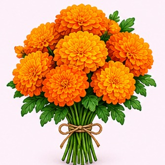
1. Flores de cempasúchil
Su color y aroma representan el camino que guía a las almas hacia la ofrenda.
Una tradición mexicana para recordar con cariño a quienes ya no están.
El altar de muertos, también llamado ofrenda, es una tradición mexicana que se coloca durante el Día de Muertos. En él se ponen fotografías, alimentos y objetos que recuerdan a nuestros familiares y amigos fallecidos. Cada elemento tiene un significado especial y ayuda a mantener viva su memoria.

Su color y aroma representan el camino que guía a las almas hacia la ofrenda.
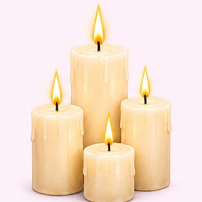
La luz simboliza la esperanza y sirve para iluminar el camino de las almas.
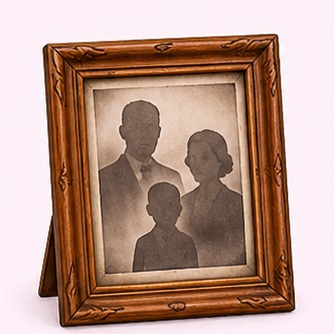
Recuerdan a las personas a quienes está dedicada la ofrenda.
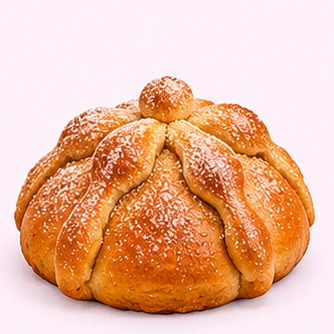
Es un alimento tradicional que se comparte como parte de la ofrenda. Sus formas recuerdan los huesos.
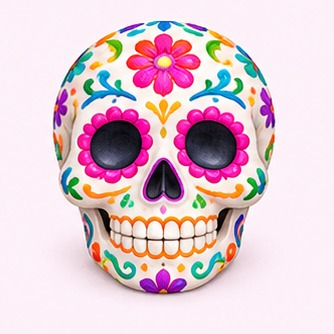
Representan la muerte de manera alegre y pueden ser de azúcar, chocolate o amaranto.
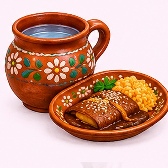
Se colocan para recibir a las almas y ofrecerles algo que les gustaba en vida.
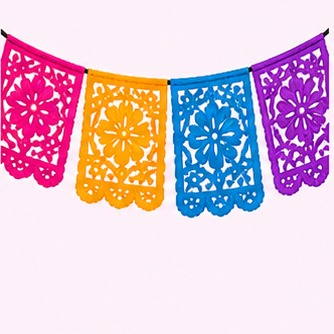
Adorna el altar y representa el viento y la unión entre la vida y la muerte.
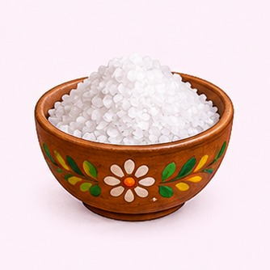
En muchas ofrendas simboliza la purificación y ayuda a que el alma siga su camino.
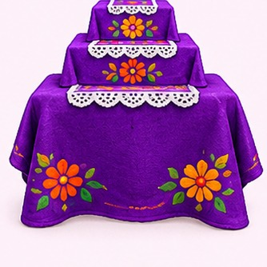
El mantel decora y da orden al altar. Los niveles pueden representar el cielo, la tierra y el mundo de los difuntos.
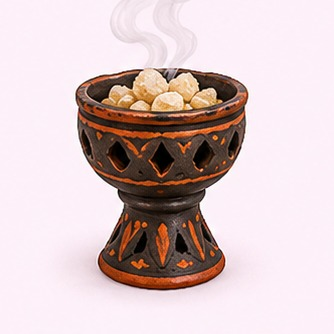
Su aroma se usa para limpiar el espacio y acompañar la bienvenida a las almas.
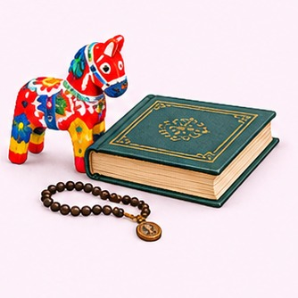
Se ponen cosas que le gustaban a la persona recordada, como juguetes, libros o herramientas.
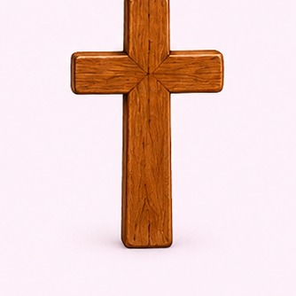
En algunas ofrendas se coloca como símbolo religioso y de fe.
Aprendí que cada elemento del altar de muertos tiene un significado y que esta tradición es una forma bonita de recordar a nuestros seres queridos. También nos enseña a valorar nuestras costumbres mexicanas y a mantener viva la memoria de las personas que queremos.